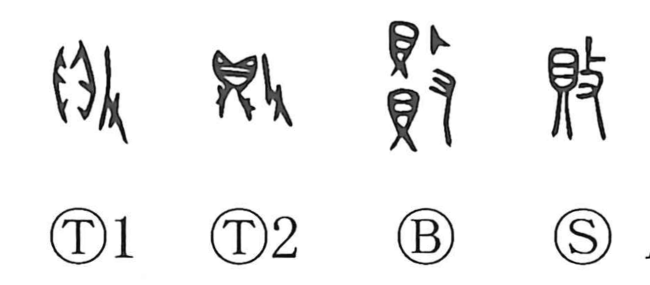

敗

Kun: yabureru, yaburu | On: hai
defeat ・ loss ・ to be defeated ・ to damage
Explanation
敗 is a compound character. The element 攴 shows a hand wielding a stick to strike, while 貝 depicts the prized cowry shells that once served as treasure and currency. The image is of striking what is valuable, yielding senses such as to break, damage, or ruin, and by extension to be defeated, as in words like 敗戦 and 敗北. In the oldest tortoise-shell and bone inscriptions, the graph appears with 鼎 (a ritual cauldron) alongside 攴, evoking the act of defacing covenant texts engraved on a ding. To mar that sacred inscription is to break the pact—a symbolic undoing that naturally broadened into the notions of loss and defeat.